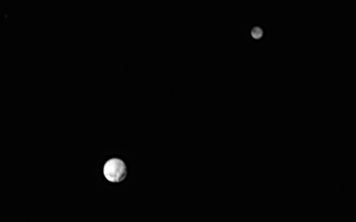

Pluto, Pluto, Here We Come
Posted on Fri 03 July 2015 by Brian Blais
Posted in articles

In anticipation of the New Horizons close flyby of Pluto in a little over a week on July 14, 2015, I read with interest the article "Calculating Pluto’s Mass With Snapshots From New Horizons". This is totally something I would do with my students, although I would have done it a little differently. Both my approach and theirs are perfectly fine, and come to equivalent answers. The difference is in which concepts are stressed.
Assumptions and Data
Using their numbers for the following:
\begin{eqnarray} \mbox{Period of Orbit}&=&3.2 \mbox{days} \ \mbox{Distance between Pluto and Charon}&=&r=1.957\times 10^{4} \mbox{km} \end{eqnarray} I, like the authors of the article, would prefer to calculate this distance using angular distances of the image but I'll use the short-cut they used in the article for expediency.
Kepler's Law
My first deviation uses Kepler's Law, or rather, Newton's version of Kepler's Law. The simplest looking version of this equation uses units of AU for the distances, Solar Masses for the total mass of the orbiting bodies, and years for the period. In this form, Kepler's Law looks like: $$ T^2 [\mbox{years}] = \frac{r^3 [\mbox{AU}]}{M_{\rm total}[\mbox{solar masses}]} $$ This law basically says that more massive systems, or more tightly bound systems, orbit faster. In this case the units are a little inconvenient. Newton's form uses meters, seconds, and kilograms - which also can involve a number of conversions, making it easier to lose track of the concepts. I prefer an intermediate form, with a conversion factor out front to take care of units. This form looks like: $$ T^2 [\mbox{days}] = \frac{r^3 [\mbox{km}]}{M_{\rm total}[\mbox{kg}]} \times 7.9\times 10^{10} $$ From this, and the data above, we can arrive at the total mass of the Pluto-Charon system directly as: \begin{eqnarray} M_{\rm total}[\mbox{kg}] &=&\frac{r^3 [\mbox{km}]}{T^2 [\mbox{days}]}\times 7.9\times 10^{10}\ &=&\frac{\left(1.957\times 10^{4}\right)^3 [\mbox{km}]}{3.2^2 [\mbox{days}]}\times 7.9\times 10^{10}=1.44\times 10^{22} {\rm kg} \end{eqnarray}
Notice this number is a bit higher than the mass of Pluto, coming in at $1.3\times 10^{22} {\rm kg}$. That's because the mass calculated here is the total mass of the Pluto-Charon system, so it is $M_{\rm total} = M_{\rm Pluto}+M_{\rm Charon}=1.44\times 10^{22} {\rm kg}$. To get the masses separately, we bring in the concept of the center of mass.
Center of Mass
From the video in the original article, you can see that Charon orbits about a little "x" in the middle in a big circle, and Pluto orbits about that same "x" in a smaller circle . That "x" marks the point in space of the center of mass of the two. It's like two ice skaters holding on to each other as that spin in a circle - each one going in a circle. If the two are the same size, then the center of their spinning is right in the middle of the two. If one of the skaters is more massive, then the lighter person spins in a larger circle and the heavier person is pulled only slightly and spins in a smaller circle. The relationship that they exhibit, mathematically, is $$ m_1 r_1 = m_2 r_2 $$ or the product of their masses and the sizes of the circles is the same for both - the more massive object orbits in a smaller circle. For Pluto and Charon, we can draw these circles from the images taken from the frames of the movies - I used Keynote, but you can use any drawing program. Even by eye you can see that the size of Pluto's circle is about 1/8 that of Charon's.
So, from the center of mass, we have
\begin{eqnarray} M_{\rm Pluto} r_{\rm Pluto} &=& M_{\rm Charon} r_{\rm Charon} \end{eqnarray} or, rearranging and measuring off of the image, \begin{eqnarray} \frac{M_{\rm Charon}}{M_{\rm Pluto}}&=&\frac{r_{\rm Pluto}}{r_{\rm Charon}} \ &=&\frac{1}{8} \end{eqnarray}
Putting it together
So we finally have, from Kepler's law, $$ M_{\rm Pluto}+M_{\rm Charon}=1.44\times 10^{22} {\rm km} $$ and from center of mass, \begin{eqnarray} \frac{M_{\rm Charon}}{M_{\rm Pluto}}&=&\frac{1}{8} \end{eqnarray} This leads to \begin{eqnarray} M_{\rm Pluto}+\frac{1}{8}M_{\rm Pluto}&=&1.44\times 10^{22} {\rm kg} \end{eqnarray} or \begin{eqnarray} M_{\rm Pluto}&=&1.28\times 10^{22} {\rm kg} \end{eqnarray} very close to the "right" answer. Of course, the "right" answer was obtained in exactly the same way, just being more careful. In fact, this is how we know nearly all of the masses of astronomical entities, from planets to stars to galaxies.
Laplace and Twins
From this paper, http://statweb.stanford.edu/~ckirby/brad/other/2013Perspective.pdf we have the fo
Student Course Evaluations
I’m always interested in the process of evaluation, especially for professors. It is common to have student evaluations performed at the end of the semester, and there are endless debates abou
Philosophy and Science
I was listening to the Dogma Debate episode “Does God Really Love You?” with Blake Giunta, and was really struck